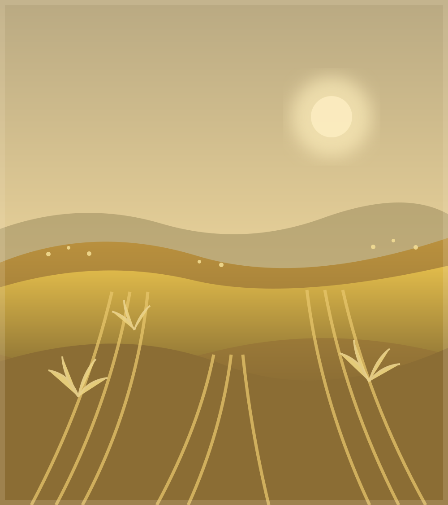

I
Mise en place
Préparer les céréales
Concasser grossièrement les grains de blé si nécessaire et rincer les pois cassés. Les pois peuvent être mis à tremper à l’avance pour faciliter leur cuisson.
Carnet de cuisine beauceron
Le brouet des terres beauceronnes
Une recette fictive inspirée des traditions paysannes
Le blé nourrit, la terre offre,
le colza dore.

Les campagnes de BeauceAu fil des saisons
Inspiré des traditions paysannes médiévales, le Colzotto des Champs est un plat généreux imaginé autour des richesses agricoles de la Beauce.
Dans les campagnes, les céréales, les légumes et les légumineuses constituaient une base essentielle de l’alimentation.
Ce brouet épais, mijoté lentement dans un chaudron, rend hommage à ces traditions et aux paysages dorés des plaines beauceronnes.
Le Colzotto est une recette fictive, créée à notre époque et inspirée du Moyen Âge. Elle n’est pas une recette historique authentifiée.
Le savoir-faire de la maisonnée
Une marmite ample, un feu doux et les trésors du jardin.
Mise en place
Concasser grossièrement les grains de blé si nécessaire et rincer les pois cassés. Les pois peuvent être mis à tremper à l’avance pour faciliter leur cuisson.
Le premier parfum
Dans une grande marmite ou un chaudron, verser trois cuillères à soupe d’huile de colza. Ajouter les oignons, l’ail, les poireaux et les carottes coupés en morceaux.
Le grain entre en scène
Ajouter le blé concassé et les pois cassés. Mélanger doucement pour imprégner les ingrédients d’huile.
Patience au coin du feu
Verser un litre de bouillon de légumes. Ajouter le navet, le thym et le laurier.
Laisser mijoter à feu doux pendant 45 à 60 minutes en remuant régulièrement. Ajouter un peu d’eau chaude si nécessaire jusqu’à ce que les céréales et les pois soient tendres.
Le secret du cuisinier
Incorporer une petite cuillère de moutarde ancienne. Saler et poivrer selon le goût.
Le résultat doit être un brouet épais, rustique et généreux.

À la lueur des chandelles
Du blé tendre, des pois fondants et les légumes du potager réunis dans une cuillerée dorée. À partager sans hâte, tout juste sortie du chaudron.
Servir bien chaud, avec un bon pain de campagneLa devise de la maisonnée
« Le blé nourrit,
la terre offre,
le colza dore. »